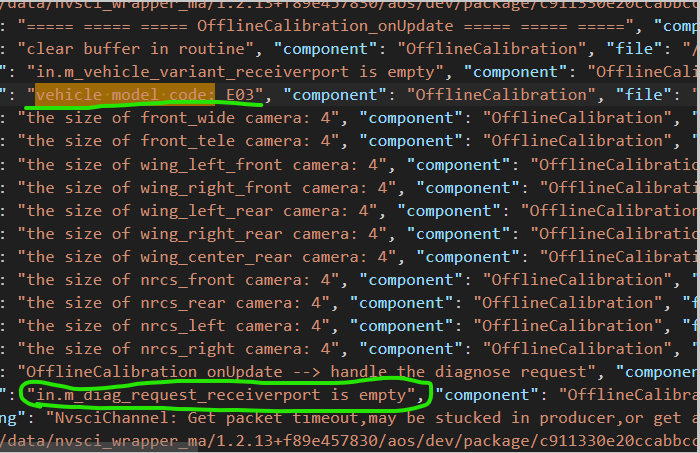
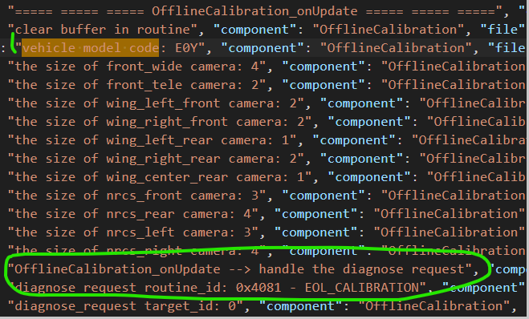

EOL Calibration problem analysis guide
DUMP data
1. serial login device
2. Close the firewall
pfctl -d -p /sock4/dev/pf -d
3. Login device with SSH
4. Configure environment variables
Enter the command export sock =/sock4
5. Enter the diagnostic test program path
cd /opt/app/diag/bin/
6. Execute the diagnostic test program
./DiagTeste
7. If the program starts successfully, enter the following in turn as follows
// Doip TX means you need to enter, send it
// Doip RX represents the device to reply to you
[DOIP TX] 1003
[DOIP RX] 50 03 00 32 01 f4
[DOIP TX] 2701
[DOIP RX] 67 01 0f 63 ae c1 b1 59 7a be 68 6e 66 6d 01 65
[Doip TX] 2702FFFFFFFFFFFFFFFFFFFFFFFFFFFFFF (16 FF)
[DOIP RX] 67 02
[DOIP TX] 3101408127FF01
[DOIP RX] 71 01 40 81 27 FF 01 00
[DOIP TX] 31034081
[Doip RX] 71 03 40 81 DF 55 15 55 01 (If the last one is 01, continue to send 31034081 until the last one is 00 or 02)
[DOIP TX] 31034081
[Doip RX] 71 03 40 81 DF 55 15 55 01 (If the last one is 01, continue to send 31034081 until the last one is 00 or 02)
// //If you respond to 7F, please start from the step of 1003
The generated file path is in the path specified by the yaml file. If you want to modify the generated file path, modify the yaml file and restart the device.
LOG configuration and acquisition
LOG level configuration:
By default, the system is called through the ESME self -opening call. For the self -opening method, the location file is in /data/esme/dualorinmaster_esme.json, search for "Offline_calibration_Deploy", modify "-a" and "-S" in about 475 lines, modify the log grade and log output formats respectively
The "-a" corresponds to the level of log: 1.Debug 2.info 3. Warning, 4.error, 5.FATAL, from 1 to 5, the content output in log will be reduced in turn
Among them, "-S" corresponds to the output format of log: 1.Console 2.json, 1 corresponding log is EXM-ERR.Log; 2 corresponding logs are official_calibration.json
For the mode of pulling up the calling manually, the LOG configuration file is in /Cache/update/asw/boot_calibration.sh, search for "OffLineCalibration_ACTIVITY", change the log level in about 95 lines, modify "-a", of which -A meansSame as above.
LOG's acquisition:
CALIBTION_ACTITY.LOG: When pulling up the call manually, log is saved in/log/aos/master
EXM-ERR. Log: When the Calibration is used by ESME, and uses the default configuration (/data/esme/dualorinmaster_esme.json, the log is configured as 1), and the log will be stored in this file. ThisThe path of the LOG is: /tmp/exm-err.log
Offline_calibration.json: When passing the Calibration via Esme, and changing the /data/esme/dualorinmaster_esme_asw.json, the log will be stored in the file. At this timeThe /log/offline_calibration.json
Log analysis
View the configuration word:
Search "Vehicle Model Code" in the calibration log file. At this time, there will be many records, which may be both "E03" and "E0Y".
 
If a record cannot be found, "In.m_diag_Request_Receiverport is Empty" string, it means that at this time it was really received the diagnostic signal that started calibration.